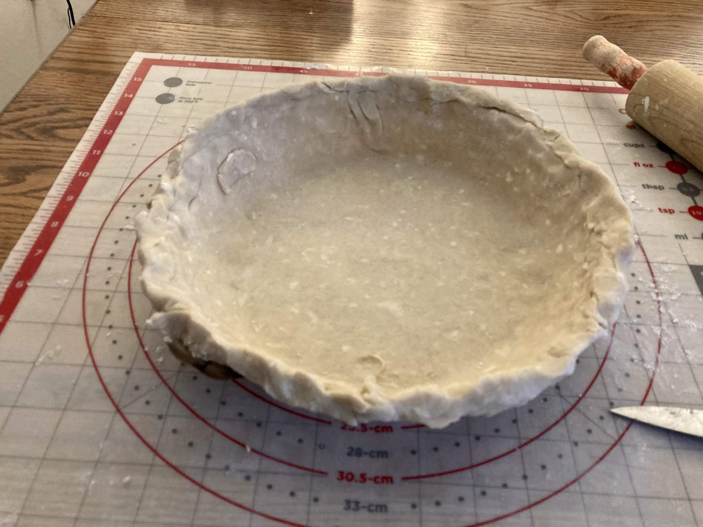
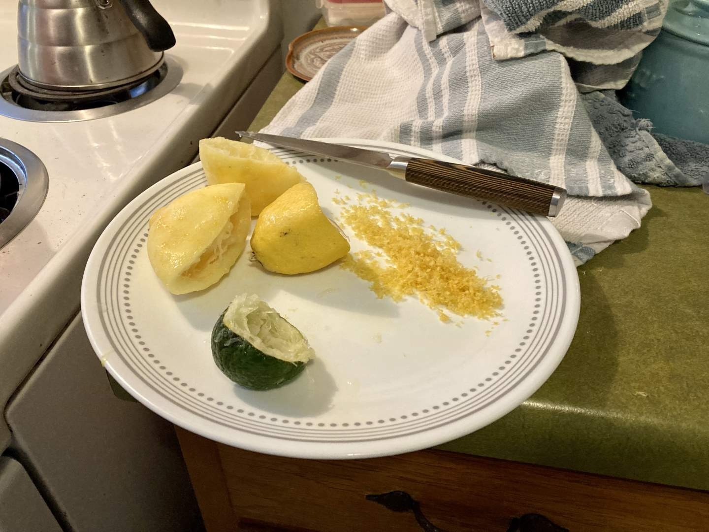
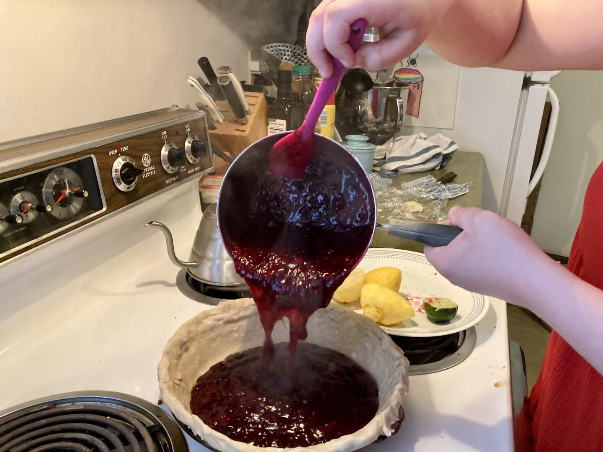
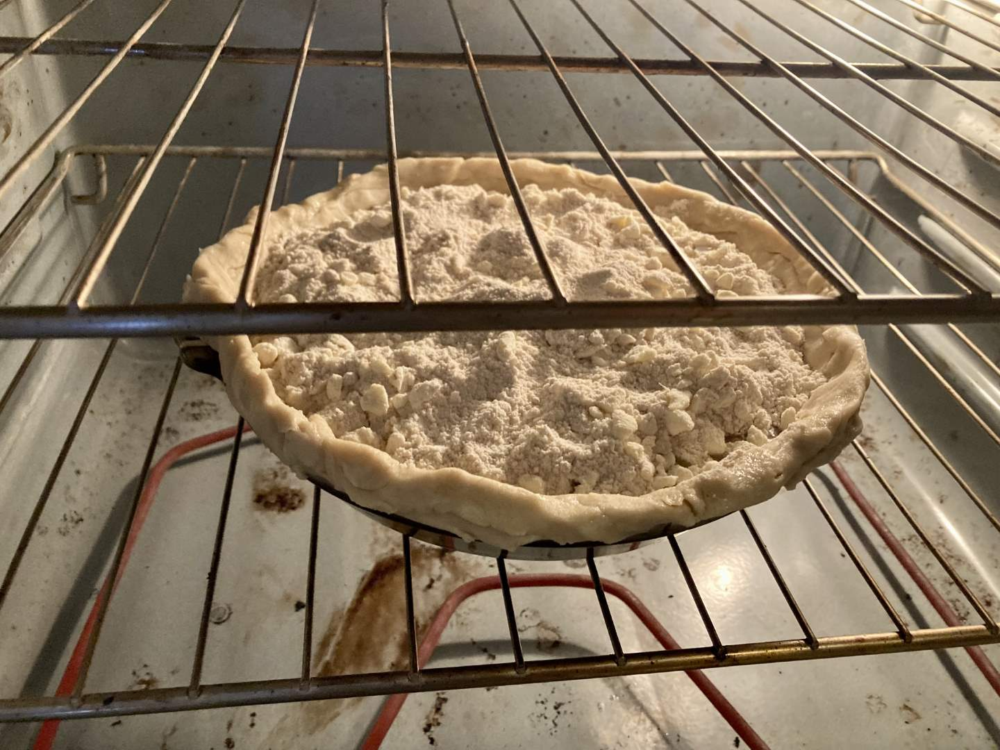
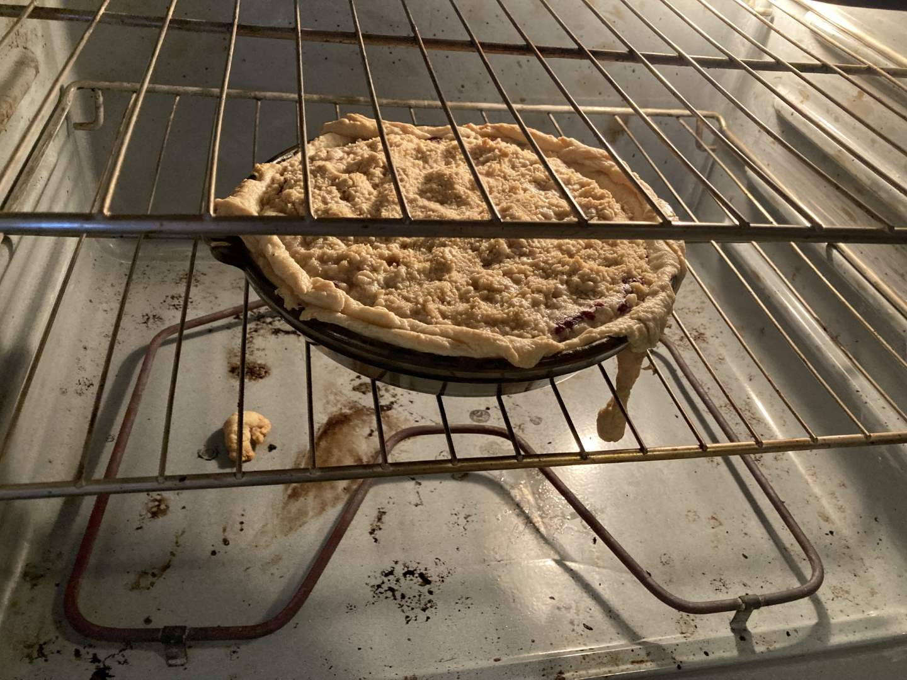
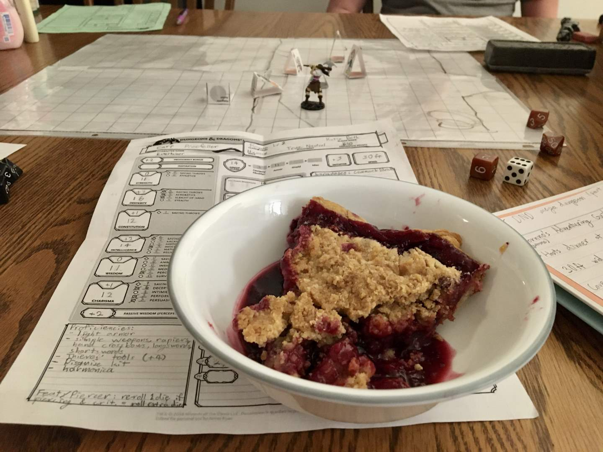

Pie 43: Black & Blue Berry
2024-04-14Recipe from Fitty Foodlicious.
Taste:
Difficulty:
Vibes:
Suggested pairing: a Dungeons & Dragons game night
The germ for this creation arose from necessity and convenient leftover ingredients. We had a single-crust doughball from the shoofly pie two weeks before, half a bag of frozen blueberries originally bought for scones, and some blackberries picked up entirely due to a sale. With these constraints—nay, inspirations—and friends coming over that evening to play Dungeons & Dragons, we embarked on yet another quest for pie perfection.
 While Ben rolled out our week-old pastry, I prepared the filling by smashing blackberries and blueberries together until they were thoroughly pulverized. Next, I zested and juiced first a lemon and then a lime when I realized there wasn’t enough juice in the lemon. I measured out sugar, arrowroot powder, and water into a saucepan with the juice, zest, and doubleberry mash. The concoction simmered for a few minutes before it began thickening, at which point I poured it into the waiting crust. Ben sprinkled the crumble topping over the dish and placed the pie in the oven to bake.
Whilst the pie baked, we were horrified to hear vicious bubbling sounds from the oven. Upon inspection, the filling was boiling over and some extra bits of crust Ben put around the pie rim were dangling down from the dish. There was little we could do as the pie was already mostly done, so we just stuck a sheet pan under the pie to prevent the mess from growing.
The recipe called for a long period of cooling to allow the filling to set. Blackberries and blueberries are rather watery fruits, so this step was unfortunately unavoidable, yet our time was short. We put the pie in the freezer In my impatience to eat the pie, I tried cutting into it after only an hour and was greeted by a soupy dark liquid that filled the cavity left by my slice. Disheartened, I replaced the slice and put the pie back in the freezer.
Eventually, we could wait no longer. Fortunately, the pie had thickened somewhat but we still needed bowls. We sliced into it with less runoff and served it to our friends amid a tense battle in the dungeon. It was very yummy, even if it didn’t form a pretty picture. The running juice, the scraggly crust, and the lackluster crumble topping did not contribute to the taste or aesthetics of the pie. It was delicious but might’ve looked better with an oat crumble topping and a good long cooling period. Alas, good time management and the virtue of patience can only be learned the hard way, but God is gracious enough to permit even ugly pies to be scrumptious.